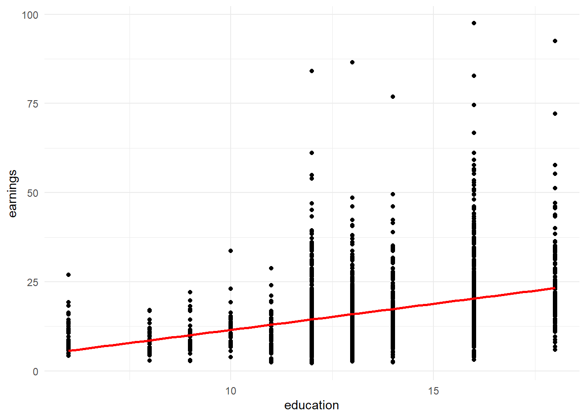

Konu 9 Değişen Varyans
Regresyon modelindeki hata terimi gözlemler boyunca sabit varyanslıdır (homoscedasticity). Sabit varyans olmaması durumu ise değişen varyanstır (heteroscedasticity). Burada bir noktanın altını çizmek gerekiyor: Bu varsayım, her bir gözlemin varyansının aynı olmasını ifade eder; örnek gözlemlerinin tümü için varyansın sabit olmasını değil. Bunu Stock ve Watson’ın kitabında bulunan bir örnek ile açıklayalım.
library(AER);library(ggplot2)
data("CPSSWEducation") #Kitaptaki verilere AER paketi yardımı ile ulaşılabilir.
head(CPSSWEducation, 10)## age gender earnings education
## 1 30 male 34.615383 16
## 2 30 female 19.230770 16
## 3 30 female 13.736263 12
## 4 30 female 13.942307 13
## 5 30 female 19.230770 16
## 6 30 female 8.000000 12
## 7 30 male 19.230770 12
## 8 29 male 26.153847 16
## 9 29 male 26.442308 16
## 10 30 female 6.221719 12ggplot(data = CPSSWEducation, aes(x = education, y = earnings)) +
geom_point() +
geom_smooth(method = "lm", se = FALSE, color = "red") +
theme_minimal()
Eğitim düzeyi daha yüksek olan çalışanların eğitim düzeyi daha düşük olan çalışanlara göre kazançları (earnings) ortalama olarak daha fazladır. Ancak kazancı daha yüksek olan işler eğitim düzeyi daha yüksek olan kişiler tarafından alınıyorsa kazançların dağılımının varyansı eğitim düzeyi yüksek olan çalışanlar için daha büyük olabilir.
Şimdi bir model kuralım.
Bağımlı değişken:
- earnings: Saatlik kazanç
Bağımsız değişken(ler):
- education: Eğitim düzeyi (6-18 yıl arasında değişen)
##
## Call:
## lm(formula = earnings ~ education, data = CPSSWEducation)
##
## Residuals:
## Min 1Q Median 3Q Max
## -17.270 -5.355 -1.513 3.194 77.164
##
## Coefficients:
## Estimate Std. Error t value Pr(>|t|)
## (Intercept) -3.13437 0.95925 -3.268 0.0011 **
## education 1.46693 0.06978 21.021 <2e-16 ***
## ---
## Signif. codes: 0 '***' 0.001 '**' 0.01 '*' 0.05 '.' 0.1 ' ' 1
##
## Residual standard error: 8.769 on 2948 degrees of freedom
## Multiple R-squared: 0.1304, Adjusted R-squared: 0.1301
## F-statistic: 441.9 on 1 and 2948 DF, p-value: < 2.2e-16Ortalama olarak saatlik kazanç her bir ilave eğitim yılı için 1.47 $ artmaktadır. Güven aralığı %95 güven düzeyinde aşağıdaki gibidir:
## 2.5 % 97.5 %
## (Intercept) -5.015248 -1.253495
## education 1.330098 1.603753Standart sapma değerleri yıl olarak eğitim düzeyine göre farklılaştığı için regresyon modeline ilişkin kalıntıların varyansı bağımsız değişkene (yıl olarak eğitim düzeyi) bağlıdır. Yani, değişen varyans söz konusudur.
library(dplyr)
CPSSWEducation %>%
group_by(education) %>%
summarise(ss = round(sd(earnings), digits = 2)) #Standart sapmalar alındı.## # A tibble: 10 x 2
## education ss
## <int> <dbl>
## 1 6 4.48
## 2 8 3.53
## 3 9 4.26
## 4 10 5.46
## 5 11 5.13
## 6 12 7.43
## 7 13 8.05
## 8 14 8.23
## 9 16 10.8
## 10 18 11.8Değişen varyansın nedenleri aşağıdaki gibi sıralanabilir.
Hatasını öğrenen modellerde, tıpkı insanların öğrenmesi gibi davranış hataları zamanla azalır ya da hata sayıları daha tutarlı hale gelir.
Örneğin, gelir yükseldikçe insanların istedikleri gibi harcayabilecekleri gelir daha çok olur, seçenekler gelişir (varyans artırıcı etki) ya da daha çok kar eden şirketlerin temettü dağıtımlarında düşük karlı şirketlere göre genellikle daha çok değişkenlik göstermesi beklenir (varyans artırıcı etki).
Verilerin toplanmasında bazı hatalar yapılabilir. Veri derleme teknikleri geliştikçe (daha az hataların ortaya çıkması) varyans da düşebilir.
Aykırı/uç değerlerin varlığı.
Model kurma hataları.
Modelde yer alan değişkenlerin birinde ya da birkaçında bulunan çarpıklık.
Yanlış veri dönüştürmeleri ya da yanlış fonksiyon kalıbı.
Değişen varyans varsa neler olur?
Sıradan En Küçük Kareler tahmincileri için BLUE’dur (Best Linear Unbiased Estimator, En İyi Doğrusal Yansız Tahmin Edici) demiştik. Değişen varyans olması durumunda doğrusal yansız tahmin edici olur.
t ve F testlerine olan güven azalır.
Değişen varyans durumunda BLUE tahmincilerini ağırlıklı en küçük kareler yöntemi verir.
Değişen varyans durumunun tespiti konusunda iki testten yararlanacağız: Breusch-Pagan ve White testleri.
Ne tür düzeltici önlemler alabiliriz?
Eğer gerçek hata terimi varyansı bağımsız değişkenlerden birinin karesi ile orantılı ise eşitliğin her iki tarafı bu değişkene bölünüp regresyon çalıştırabilir. Ardından bunları Breusch-Pagan ve White testlerinden geçirebiliriz.
Eğer gerçek hata terimi varyansı bağımsız değişkenlerden birisi ile orantılıysa karekök dönüşümü kullanılabilir. Yani, her iki taraf belirlenen bağımsız değişkenin kareköküne bölünür. Ardından Breusch-Pagan ve White testlerinden geçirebiliriz.
Eğer değerler pozitifse bağımlı değişkenin logaritması alınabilir.
setwd("C:/Users/datanerd/Desktop/Github/rEkonometri/data")
df <- read_excel("Table1_1.xls")
df %<>%
dplyr::select(wage, female, nonwhite, union, education, exper)9.1 Breusch-Pagan
Büyük örneklemler içindir. Sıradan En Küçük Kareler regresyonu tahmin edilip bu regresyondan kalıntı kareleri elde edilir. Ardından kalıntı karelerin bir veya daha fazla X değişkeni ile ilişkili olup olmadığını görmek için kalıntı karelerin modele dahil edilen bağımsız değişkenlere göre regresyonu alınır. Buradaki \(H_0\) hata teriminin sabit varyanslı olduğudur. Bu hipotezin testi için F testini (pay ve payda sırasıyla k-1 ve n-k serbestlik dereceli olacak) kullanabiliriz. F istatistiği istatistiksel olarak anlamlı ise \(H_0\) reddedilir. F istatistiğine alternatif olarak \(\chi^2\) istatistiği de kullanılabilir. \(\chi^2\) değeri küçük bir p değerine sahipse \(H_0\) reddedilebilir.
Öncelikle modeli normal bir şekilde kuralım.
model <- lm(formula = wage ~ female + nonwhite + union + education + exper, data = df)
summary(model)##
## Call:
## lm(formula = wage ~ female + nonwhite + union + education + exper,
## data = df)
##
## Residuals:
## Min 1Q Median 3Q Max
## -20.781 -3.760 -1.044 2.418 50.414
##
## Coefficients:
## Estimate Std. Error t value Pr(>|t|)
## (Intercept) -7.18334 1.01579 -7.072 2.51e-12 ***
## female -3.07488 0.36462 -8.433 < 2e-16 ***
## nonwhite -1.56531 0.50919 -3.074 0.00216 **
## union 1.09598 0.50608 2.166 0.03052 *
## education 1.37030 0.06590 20.792 < 2e-16 ***
## exper 0.16661 0.01605 10.382 < 2e-16 ***
## ---
## Signif. codes: 0 '***' 0.001 '**' 0.01 '*' 0.05 '.' 0.1 ' ' 1
##
## Residual standard error: 6.508 on 1283 degrees of freedom
## Multiple R-squared: 0.3233, Adjusted R-squared: 0.3207
## F-statistic: 122.6 on 5 and 1283 DF, p-value: < 2.2e-16Ardından bu modelden kalıntı kareleri elde edip bir model daha kuralım.
df$res <- (model$residuals)^2
modelres <- lm(res ~ female + nonwhite + union + education + exper, data = df)
summary(modelres)##
## Call:
## lm(formula = res ~ female + nonwhite + union + education + exper,
## data = df)
##
## Residuals:
## Min 1Q Median 3Q Max
## -110.57 -36.73 -18.33 -1.47 2483.23
##
## Coefficients:
## Estimate Std. Error t value Pr(>|t|)
## (Intercept) -73.3377 19.6801 -3.726 0.000203 ***
## female -9.7007 7.0642 -1.373 0.169924
## nonwhite -12.6683 9.8651 -1.284 0.199321
## union -27.2099 9.8049 -2.775 0.005598 **
## education 7.9624 1.2768 6.236 6.08e-10 ***
## exper 1.1665 0.3109 3.752 0.000183 ***
## ---
## Signif. codes: 0 '***' 0.001 '**' 0.01 '*' 0.05 '.' 0.1 ' ' 1
##
## Residual standard error: 126.1 on 1283 degrees of freedom
## Multiple R-squared: 0.04292, Adjusted R-squared: 0.03919
## F-statistic: 11.51 on 5 and 1283 DF, p-value: 6.878e-11%4.3 olan bir \(R^2\) elde ettik. Bu değeri gözlem sayısı olan 1289 ile çarpıp aşağıdaki \(\chi^2\) değerini elde ederiz.
## [1] 55.32705Tabi bunu paket yardımı ile de yapabiliriz. Hatta buradan p değerini de elde edip hipotezin red olup olmayacağına karar vereceğiz.
##
## studentized Breusch-Pagan test
##
## data: model
## BP = 55.327, df = 5, p-value = 1.118e-105 serbestlik dereceli (bağımsız değişken sayımız) en az bu değerde bir \(\chi^2\) bulma olasılığı neredeyse sıfırdır (0.0000000001118). Yani, \(H_0\) reddedilir. Bu da değişen varyansa işaret ediyor.
9.2 White
Büyük örneklemler içindir. Yukarıdaki teste göre daha genel ve daha esnektir. Burada da \(\chi^2\) istatistiği kullanılabilir. White testinin uygulanması için kurulan model tahmin edilerek kalıntılar belirlenir. Belirlenen kalıntıların karelerinin bağımlı değişken olduğu, bağımsız değişkenlerin ise modelin bağımsız değişkenleri, bağımsız değişkenlerin kareleri ve bağımsız değişkenlerin birbirleri ile çarpımlarından oluşan yardımcı regresyon modeli tahmin edilir.
model <- lm(formula = wage ~ female + nonwhite + union + education + exper, data = df)
bptest(model, ~ female*nonwhite + female*union + female*education + female*exper + nonwhite*union + nonwhite*education + nonwhite*exper + union*education + union*exper + education*exper + I(female^2) + I(nonwhite^2) + I(union^2) + I(education^2) + I(exper^2), data = df)##
## studentized Breusch-Pagan test
##
## data: model
## BP = 79.431, df = 17, p-value = 4.839e-10Yukarıdaki fonksiyon bağımsız değişkenlerin karesel ve çarpraz terimlerini model ekler. p değeri burada da sıfıra yakın çıktı (0.0000000004839). Yani, White = 79.431 veya daha büyük bir \(\chi^2\) değeri bulma olasılığı neredeyse sıfırdır; \(H_0\) reddedilir. Bu da değişen varyans sorununa işaret eder.
Daha önce bağımlı değişkene logaritma almayı uygulamıştık. Acaba bu model değişen varyans içeriyor mu?
df %>%
mutate(lnwage = log(wage)) -> df
model <- lm(formula = lnwage ~ female + nonwhite + union + education + exper, data = df)
bptest(model)##
## studentized Breusch-Pagan test
##
## data: model
## BP = 30.35, df = 5, p-value = 1.258e-05##
## studentized Breusch-Pagan test
##
## data: model
## BP = 45.541, df = 17, p-value = 0.0002022p değerleri büyüdü ama yine de değişen varyans sorununa işaret ediyor.
Çoklu doğrusal bağlantıda da belirtmiştik: Hiçbir şey yapmamak. Değişen varyans için de aslında sorun ciddiyse düzeltmeye gidileceği önerilir. Bu durumu her hastalık için ilaç almamaya benzetiyorum ama yine de önlemlerin ne olabileceğini bilmeliyiz.
9.3 Robust Standart Hatalar
Örneklem genişliği büyük olduğunda, White, değişen varyansı düzeltilmiş standart hataları bulmak için bir yöntem önermiştir. Literatürde White-Huber standart hataları ya da robust (dirençli) standart hatalar olarak geçer. Bu yöntem ile birazdan çıktıda da göreceğiniz üzere parametreler değişmez ama değişen varyansı hesaba katmak amacıyla standart hatalar düzeltilir. Değişen varyans yoksa diye soracak olursak, robust standart hatalar geleneksel Sıradan En Küçük Kareler standart hataları olacaktır. Yani, sabit varyans durumunda bile bu robust standart hatalar geçerli olacaktır. Altını çizmemiz gereken yer büyük bir örnekleme ihtiyacımız olacağıdır (küçük örneklerde dirençli t istatistikleri t dağılımına çok da yakın olmayan bir dağılım sergiler). Robust standart hatalar ile F istatistiği kullanmak yerine değişen varyans robust Wald istatistiği kullanılır. Değişen varyans robust Wald istatistiğinin F istatistiğine dönüştürülebilir olduğunu da bilelim.
##
## Call:
## lm_robust(formula = wage ~ female + nonwhite + union + education +
## exper, data = df, se_type = "stata")
##
## Standard error type: HC1
##
## Coefficients:
## Estimate Std. Error t value Pr(>|t|) CI Lower CI Upper DF
## (Intercept) -7.1833 1.09006 -6.590 6.412e-11 -9.3218 -5.0448 1283
## female -3.0749 0.36426 -8.442 8.355e-17 -3.7895 -2.3603 1283
## nonwhite -1.5653 0.39763 -3.937 8.706e-05 -2.3454 -0.7852 1283
## union 1.0960 0.42580 2.574 1.017e-02 0.2606 1.9313 1283
## education 1.3703 0.08349 16.414 4.200e-55 1.2065 1.5341 1283
## exper 0.1666 0.01605 10.381 2.678e-24 0.1351 0.1981 1283
##
## Multiple R-squared: 0.3233 , Adjusted R-squared: 0.3207
## F-statistic: 100.9 on 5 and 1283 DF, p-value: < 2.2e-16İşte, hepsi bu kadar. White’ın robust standart hatalarını hesaplayarak değişen varyans sorununu basitçe düzelttik. Regresyon parametreleri (ilk görseldeki modele bakın) aynı kaldı. Bazı standart hatalar değişti bu da doğal olarak t değerlerini değiştirdi.